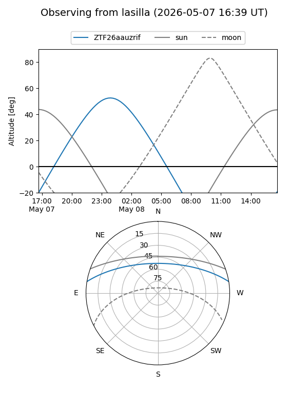
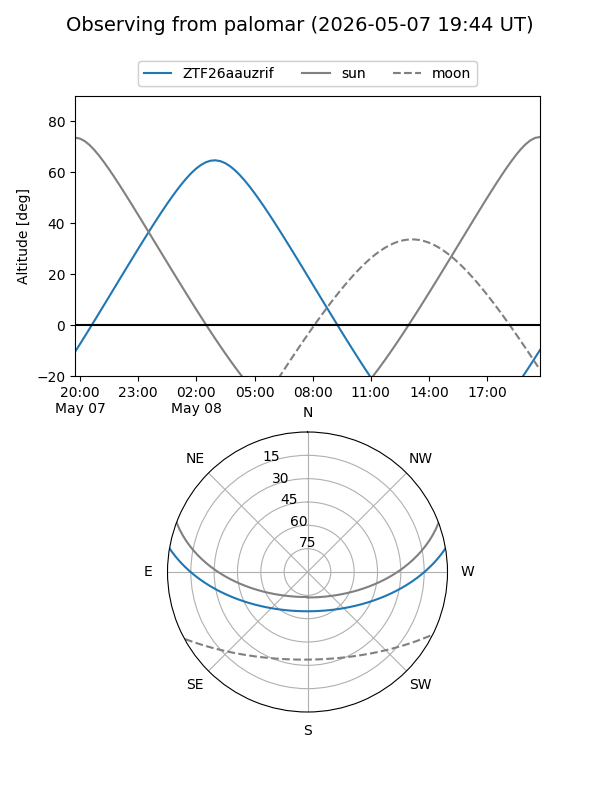

ZTF26aauzrif
Target ZTF26aauzrif at 2026-05-08 05:11
Aliases and brokers:
FINK: link
Lasair: link
ALeRCE: link
alt names
ZTF26aauzrif (ztf,fink_ztf)
Coordinates:
equatorial (ra, dec) = 152.8378,+8.23348
equatorial (HMS+DMS) = 10:11:21.07,+08:14:00.53
galactic (l, b) = (231.8509,+47.71686)
Flags:
Photometry:
last ztfg=19.66
1 ztfg detections
Lightcurve
Visibility


Additional plots